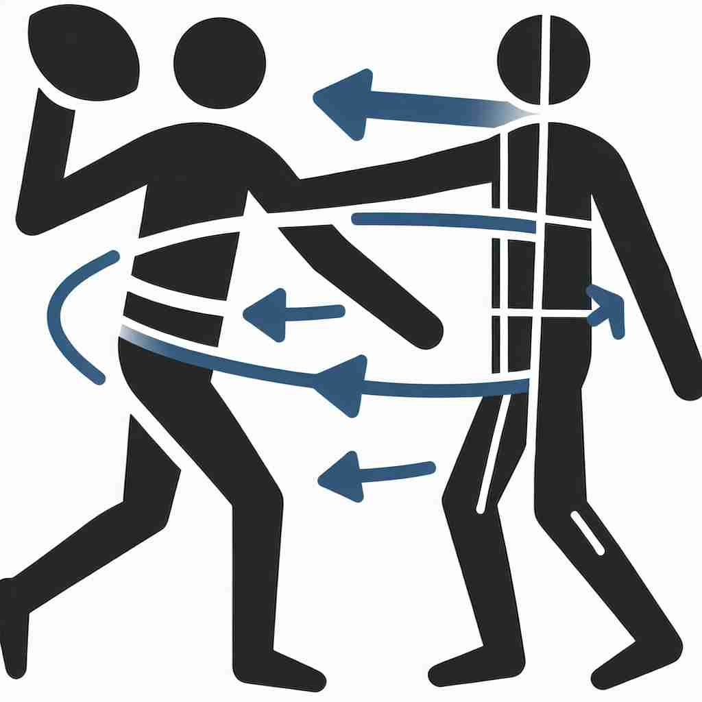

💬 The athlete showed impressive lateral movement during the race.

💬 The player made a lateral pass to avoid being tackled.
🔈 ['læt(ə)r(ə)l]
🗝️ adj. relating to or coming from the side
🖼️ 在一场精彩的舞蹈表演中，舞者们从舞台的两侧轻盈地走出，形成一个优美的侧面队形。这种从侧面而来的动作体现了'lateral'作为从侧面来的含义。
🔍 想象一个人站在你面前，'lateral' 就是与他身体两侧相关的一切。无论是方向、移动还是位置变化，只要涉及"侧面"的概念，都可以用 'lateral' 来描述。这个核心概念贯穿了 'lateral' 的各种用法，帮助你更容易理解和记忆它的多重含义。
💬 The athlete showed impressive lateral movement during the race.
💬 The player made a lateral pass to avoid being tackled.
🌳 词根 'later-' 源自拉丁语 'latus'，意为 '边，侧'，后缀 '-al' 表示形容词，构成 'lateral'，即 '侧面的，横向的'。
💡 可以将 'lateral' 联想成 'side'。记忆时，可以想象一个事物的 '侧面' 或'侧翼'，帮助记住其与'边'相关的含义。
🗝️ adj. extending or moving sideways
🖼️ 在一个开阔的田野上，一名园艺师正在修剪灌木。他用剪刀小心地将枝桠向两侧剪开，使植物横向延伸，体现了'lateral'作为向侧面扩展的含义。
💬 The crab made a lateral movement to avoid the predator.
❓ 从核心含义延伸，描述向侧面移动或延伸的动作
🗝️ adj. involving movement to a different but equivalent position
🖼️ 办公室里，一名员工在工作调动中从一个部门转到了另一个部门，但职位和责任保持不变。这次侧向调动体现了'lateral'作为平级位置变动的含义。
💬 He made a lateral career move to a different department.
❓ 从侧向移动引申为在同一层级的不同位置间移动
🗝️ n. a pass thrown parallel to the line of scrimmage in American football
🖼️ 在美国橄榄球比赛中，四分卫将球平行地传给旁边的队友，这是一个典型的lateral pass，展示了'lateral'作为橄榄球中平行传球的含义。
💬 The quarterback threw a lateral to the running back.
❓ 源自足球中向侧面传球的动作
🗝️ n. a sound produced with air escaping along the sides of the tongue
🖼️ 在语音学课堂上，老师示范发‘l’音，解释这是一个侧音，因为气流沿着舌头的两侧逸出，如此解释了'lateral'作为侧音的含义。
💬 The 'l' sound in 'lateral' is itself a lateral consonant.
❓ 语音学中指气流从舌头两侧流出产生的音
🗝️ v. to move or pass sideways
🖼️ 在人行道上，一只螃蟹紧贴地面横着行进，它独特的侧向移动方式展示了'lateral'作为横向移动的含义。
💬 The fish lateraled through the coral reef.
❓ 将侧向移动的概念动词化